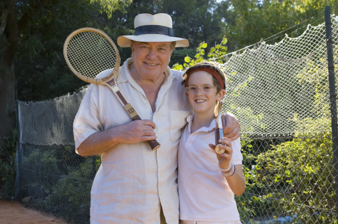
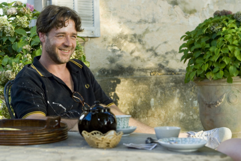
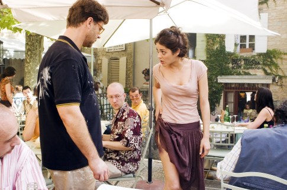
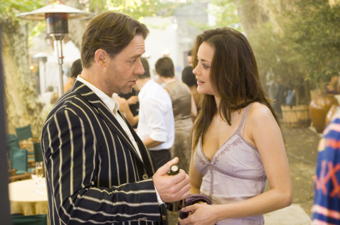

Más que una historia de amor
Esta noche vimos con Ceci una peli muy linda, se llama Un buen año y es más que una historia de amor. Es la historia de un hombre que tiene todo lo que el dinero le puede dar, se siente en la cima de la vida y trata mal a todo el mundo. Y de cómo recupera los valores de su infancia.
Antes de seguir les dejo una cita que me gusta mucho, la primera vez que la oí me la dijo mi amigo Joel:
La comida sacia el hambre, el agua sacia la sed. Pero.. el dinero no sacia la codicia.
En fin, este hombre del que les contaba solía pasar cuando chico sus veranos en el viñedo de su tío en Francia (de grande vive en Londres) y durante uno de sus típicos y agitados días de trabajo recibe la noticia de que su tío murió y de que él es el único heredero. Viaja al pequeño pueblo dónde está el viñedo para arreglar los detalles que le permitan venderlo en un par de días pero toda la magia del lugar, su naturaleza, su historia, su vida conspiran (de un modo inconsciente) para hacerle cambiar de parecer.
Un elemento imprescindible en esta historia, y justamente el condimento que la convierte en una de amor, es la aparición de una mujer. Una persona que era niña cuando el niño y a quien recuerda de sus veranos mientras se vuelve a enamorar de ella. Como unos 20 años atrás.
También me gustó mucho como está filmada, así que les dejo unas fotos de IMDB (creo que permiten apreciar algo de esto).




Comentarios
Comments powered by Disqus